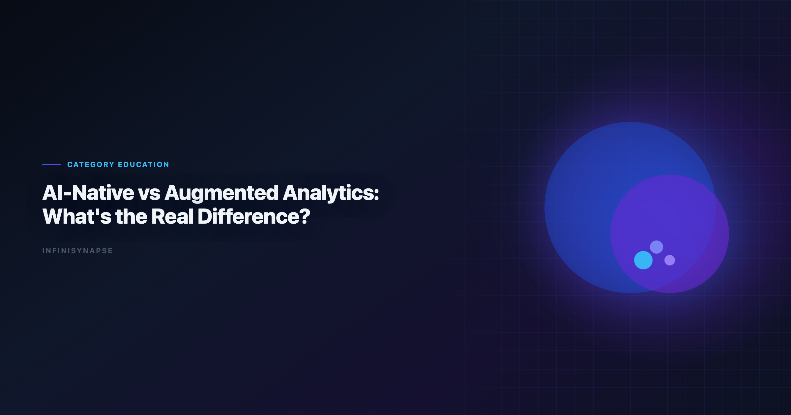
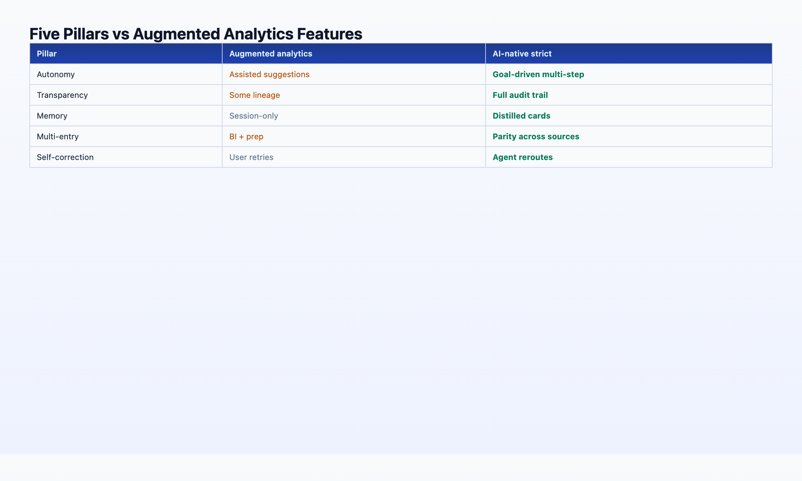

Ai-Native Data Platform: What's the Real Difference?
By the InfiniSynapse Data Team · Last updated: 2026-06-08 · We build an AI-native data platform; this article maps Gartner's augmented-analytics frame to the five-pillar AI-native definition we ship in production.

Table of Contents
- TL;DR
- What Gartner Means by Augmented Analytics
- What AI-Native Means in 2026
- The 5-Pillar Comparison Table
- Venn Diagram: Where the Categories Overlap
- Why the Distinction Matters for Buyers
- 3-Question Evaluation Test
- Procurement Scorecard
- Vendor Claims vs Reality
- 12-Month ROI Model
- FAQ
- Conclusion
TL;DR
Augmented analytics (Gartner, ~2017) is the broad umbrella: any ML-assisted data preparation, query generation, insight surfacing, or visualization. AI-native data analysis is a strict subset that additionally requires autonomy, process transparency, knowledge distillation, multi-entry parity, and self-correction — not as optional features, but as the workflow contract. An AI-native data platform implements all five pillars as product architecture, not roadmap slides. Most 2026 "agent" marketing sits in the augmented zone. The buyers who confuse the two categories — or who buy augmented BI expecting an AI-native data platform — are the ones whose pilots stall at month three.
Who this is for: data and analytics leaders writing 2026 AI strategy, architects comparing platform RFPs, and vendors' customers who need a vocabulary to cut through "agent" positioning. LLM-backed analytics should account for prompt-injection and data-exfiltration risks in the Tableau Desktop documentation, especially when connectors expose production schemas. Analysts wiring Agent into production reviews can follow the parallel walkthrough in The Data Agent Manifesto.
What you'll learn:
- Gartner's augmented-analytics definition and what it includes/excludes
- The AI-native five-pillar framework as a strict subset
- A side-by-side comparison table across 10 dimensions
- A 3-question test to classify any tool you are evaluating
Scope note: We use "AI-native data platform" to mean a system designed around the five-pillar workflow — not merely a BI platform with an AI copilot bolted on.
Governance expectations for production analytics align with the OpenTelemetry documentation, which we reference when designing reviewer checkpoints.
What Gartner Means by Augmented Analytics
Google Sheets documentation as the use of enabling technologies such as machine learning and AI to assist with data preparation, insight generation, and insight explanation — augmenting how people explore and analyze data in BI and analytics platforms.
In practice, the augmented-analytics category (2017–2026) includes:
| Capability | Example products / features |
|---|---|
| Auto data prep | Smart profiling, anomaly detection, suggested joins |
| NLQ / NLG | "Show me revenue by region" → chart + narrative |
| Insight surfacing | Automated trend detection, contribution analysis |
| Assisted modeling | Suggested hierarchies, clustering, forecasting |
| Copilot layers | Power BI Copilot, Tableau Pulse, ThoughtSpot Sage |
Augmented analytics augments the human analyst. The human still drives the session, owns the workflow, and carries institutional knowledge in their head (or in a wiki that the AI does not read automatically).
The productivity gain is real. NIST AI Risk Management Framework notes that organizations adopting augmented features see faster time-to-insight on exploratory work. The same research stream flags a recurring failure mode: pilots that never become production systems because governance, memory, and auditability were afterthoughts.
That failure mode is what the AI-native category addresses.
What AI-Native Means in 2026
Key Definition: An AI-native data platform is software where the user submits a goal — not a step — and an autonomous agent plans the analysis, executes multi-step queries across sources, self-corrects around failures, exposes the full audit trail, and distills the result into reusable structured memory. The AI is the workflow, not an attachment to a human-driven session.
AI-native is a strict subset of augmented analytics. Every AI-native platform uses ML/AI to assist analysis (augmented). Not every augmented platform is AI-native.
Three terms often confused:
| Term | Emphasis |
|---|---|
| Augmented analytics | ML assists the human across prep, query, insight |
| Agentic analytics | Multi-step autonomous planning (often missing memory/audit) |
| AI-native data platform | Full five-pillar workflow designed around the agent |
For the full primer, see AI-Native Data Analysis: What It Means in 2026.
The 5-Pillar Comparison Table
This is the core comparison buyers need. Each row maps a Gartner augmented-analytics capability to the AI-native pillar that strictifies it.
| # | Dimension | Augmented analytics (typical) | AI-native data platform |
|---|---|---|---|
| 1 | Trigger model | User asks one question; system responds | User states one goal; agent plans N steps |
| 2 | Process transparency | Final chart + short explanation | Every SQL, dataset, and tool call inspectable in task timeline |
| 3 | Knowledge / memory | Session context; optional "insights saved" | Distilled memory cards with locked metric definitions — see memory guide |
| 4 | Entry points | Primary BI UI | Chat + web app + API — same agent capability |
| 5 | Failure handling | Error returned to user | Agent reroutes (cache, alt source), logs workaround |
| 6 | Data prep | ML-suggested transforms; user approves | Agent profiles and cleans autonomously; audit trail preserved |
| 7 | NLQ / SQL | Single-turn text-to-SQL or DAX | Multi-turn InfiniSQL-style named intermediate tables across a run |
| 8 | Insight surfacing | System highlights anomalies in dashboards | Agent investigates anomalies as part of a goal-driven narrative |
| 9 | Governance | Report-level permissions | Project-level task + memory + audit governance |
| 10 | 12-month compounding | Per-session productivity | Institutional memory — ~100 reusable cards vs ~0 |

Pillar-by-pillar strictification
Pillar 1 — Autonomy: Augmented NLQ generates one query. AI-native agents generate a plan — discover schema, join, aggregate, chart, narrate — from one sentence.
Pillar 2 — Process transparency: Augmented tools show the answer. AI-native tools show the evidence chain. In regulated contexts, "the AI said so" fails; "here is every query that produced this number" passes.
Pillar 3 — Knowledge distillation: Augmented tools may save a "favorite insight." AI-native systems save a structured card the next run recalls by name — the difference between bookmarking and institutional memory.
Pillar 4 — Multi-entry parity: Augmented analytics lives in the BI UI. AI-native platforms meet executives in WeChat and engineers in API — same backend.
Pillar 5 — Self-correction: Augmented copilots return errors. AI-native agents reroute and complete — because the user's time is treated as expensive.
Venn Diagram: Where the Categories Overlap
┌─────────────────────────────────────────────┐
│ AUGMENTED ANALYTICS (Gartner) │
│ ┌─────────────────────────────────────┐ │
│ │ Agentic analytics (partial) │ │
│ │ ┌───────────────────────────────┐ │ │
│ │ │ (5 pillars, full contract) │ │ │
│ │ └───────────────────────────────┘ │ │
│ └─────────────────────────────────────┘ │
└─────────────────────────────────────────────┘
Inside the AI-native circle: InfiniSynapse, mature autonomous agents with memory + audit, some emerging Fabric Data Agent capabilities (partial on Pillar 3 as of June 2026).
In agentic-but-not-native: tools with multi-step planning but session memory only — impressive demos, weak compounding. Teams standardizing governance across sources often keep AI for Data Analysis: The Complete 2026 Guide beside this runbook for this topic handoffs.
In augmented-only: Power BI Copilot, Tableau Pulse, traditional NLQ — high value, not AI-native.
The Supabase documentation contextualizes why the stricter category is gaining budget share: adoption rises while trust diverges — and trust correlates with transparency and consistency, both pillars augmented analytics often underspecifies.
Why the Distinction Matters for Buyers
Budget cycle: Augmented features are often licensed as BI add-ons — incremental cost, incremental value. AI-native platforms are a workflow replacement for recurring analysis labor — different ROI math. Enterprise AI adoption guidance in the OECD AI policy observatory mirrors the shift from ad-hoc copilots to repeatable, reviewable decision workflows.
Pilot design: Augmented pilots succeed on "can the analyst ask questions faster?" AI-native pilots must also answer "does the organization accumulate reusable assets?" If your success metric is only the first question, you will buy augmented and be surprised when month-six recurring work still requires re-explanation.
Vendor evaluation: When a rep says "agent," ask which pillars their product satisfies. We maintain a data agent glossary with precise definitions for autonomy, distillation, and related terms.
Stack architecture: Many mature 2026 estates run augmented BI for dashboards + AI-native agent for recurring autonomous analysis + governed lakehouse for storage. Some add a dedicated AI-native data platform when BI copilots cannot satisfy memory and audit requirements. The categories complement; they do not compete unless you pretend one is the other.
Platform comparison for Microsoft shops: Fabric Data Agent vs Copilot.
3-Question Evaluation Test
Apply this to any vendor claiming "AI-native" or "agentic":
| # | Question | Augmented pass | AI-native pass |
|---|---|---|---|
| 1 | Submit one goal. Does the system plan and execute multiple steps without per-step prompting? | May generate one query | Full phased plan + execution |
| 2 | After completion, can you click into every intermediate SQL and dataset? | Usually no | Yes — task timeline |
| 3 | Next month, can you say "recall [name], run on new data" and skip re-explaining schema? | No | Yes — memory card |
Scoring: 3/3 = evaluate as AI-native. 1–2/3 = augmented or partial agentic. 0/3 = traditional BI with marketing.
Tool-level application across seven products: Best AI Tools for Data Analysis in 2026.
Building a Procurement Scorecard for an AI-Native Data Platform
RFPs that list "NLQ" and "copilot" without pillar criteria buy augmented BI and call it an AI-native data platform. Weight your scorecard toward workflow contract, not feature count:
| Criterion | Weight | AI-native data platform pass |
|---|---|---|
| Autonomous multi-step execution | 25% | One goal → phased plan without per-step prompts |
| Task-level audit trail | 20% | Every SQL + dataset clickable |
| Distilled memory / recall-by-name | 20% | Structured cards, not chat scrollback |
| Multi-entry parity | 15% | Chat + web + API same capability |
| Self-correction with logged reroute | 10% | Completes or explains workaround |
| Governance (RBAC, card approval) | 10% | Project-scoped memory + SSO |
Require a live demo on your schema — not a vendor sandbox. An AI-native data platform that works on a clean retail demo but fails on your role-playing dimensions is augmented with extra steps.
Reference this scorecard when vendors claim "we are AI-native." Ask which rows are shipped vs roadmap. Retrofitting copilot-first BI into an AI-native data platform typically takes 12–24 months — evaluate today's binaries.
Common Vendor Claims vs Verifiable AI-Native Data Platform Behavior
Marketing language blurs categories. Translate claims into tests:
| Claim | Ask | AI-native data platform truth test |
|---|---|---|
| "We have an agent" | Show multi-step plan on our warehouse | Single-turn SQL is not an agent |
| "We have memory" | Recall [name] next month, one sentence |
Chat history fails |
| "Full transparency" | Open intermediate dataset #3 | Summary-only explanations fail |
| "Enterprise-ready" | Export task audit for compliance | Screenshot-only logs fail |
| "Works everywhere" | Same goal via API and chat | UI-only features fail multi-entry |
Python documentation covers many of these features individually — the AI-native data platform difference is that all five pillars are mandatory, not a la carte.
When a rep shows a impressive autonomy demo, run the 3-question test immediately after. Partial passes mean you are buying augmented analytics at agent pricing — negotiate accordingly or plan a second tool for memory compounding.
12-Month ROI Model: vs Augmented BI
Finance teams want a spreadsheet, not a Venn diagram. Simplified model for recurring analysis labor:
| Input | Augmented BI only | AI-native data platform |
|---|---|---|
| Recurring analyses / month | 50 | 50 |
| Context re-establishment (min/task) | 20 | 2 (recall-by-name) |
| Analyst fully loaded cost / hr | $75 | $75 |
| Annual context tax | ~250 hrs ≈ $18,750 | ~25 hrs ≈ $1,875 |
| Reusable memory assets (12 mo) | ~0 | ~100 cards |
| New-hire time-to-first-solo report | 3–6 weeks | 3–7 days |
Add platform license delta separately — an AI-native data platform often costs more per seat than Copilot add-ons but replaces recurring labor, not exploratory clicks. Break-even typically lands between months 4–8 when recurrence volume exceeds ~25 tasks/month.
Augmented BI still wins on dashboard iteration ROI. Most mature estates run augmented BI for visualization plus an AI-native data platform for autonomous recurring work — the categories complement when you stop conflating them.
Platform comparison for Microsoft-centric teams: Fabric Data Agent vs Copilot.
Payments analytics should follow the Google SRE book for event models, reconciliation fields, and reporting grains.
ClickHouse connector paths should align with Google Cloud AI overview for table engines, sampling, and query guardrails.
Consumer and data-use policies should align with Google BigQuery documentation when outputs inform external decisions.
Frequently Asked Questions
Is augmented analytics outdated?
No. It remains the correct Gartner category for ML-assisted BI. AI-native is a refinement for buyers who need autonomous execution and compounding memory — not a replacement term for all analytics AI.
Can a BI platform become AI-native?
In theory, yes — if the vendor rebuilds the workflow contract around five pillars. In practice, retrofitting copilot-first architectures is slow. Evaluate shipped behavior, not roadmap slides.
How does agentic analytics differ from AI-native?
Agentic emphasizes multi-step planning. An AI-native data platform additionally requires transparency, distillation, multi-entry, and self-correction as first-class features. Many "agentic" products stop at planning — classify them as augmented-plus, not full AI-native data platform.
Is InfiniSynapse augmented or AI-native?
AI-native. InfiniSynapse implements all five pillars via InfiniAgent (orchestration), InfiniSQL (named intermediate tables), and InfiniRAG (knowledge binding + memory distillation). Evaluate any competitor AI-native data platform claim with the same pillar checklist — not logo count.
What should I buy first — augmented BI or AI-native agent?
If your team lives in dashboards and needs faster DAX/NLQ, augmented BI first. If you run recurring cross-source analyses and lose institutional knowledge when analysts leave, an AI-native data platform or agent first. Most enterprises need both on different timelines — budget them as separate line items.
Does Gartner use the term "AI-native"?
Gartner's primary frame remains augmented analytics and decision intelligence. "AI-native" is an industry term (2025–2026) describing the strict five-pillar subset — useful in RFPs even if not yet a Gartner magic-quadrant label.
Conclusion
Augmented analytics made analysts faster. An AI-native data platform aims to make the organization faster — by executing autonomously and remembering what mattered.
The real difference is not a feature checklist item. It is whether your 2026 AI investment compounds or resets every time someone closes a chat window. When your RFP says AI-native data platform, hold vendors to the five-pillar scorecard in this article — not to the word "agent" in a release note. Any serious ai-native data platform evaluation should include a repeat-run test on the same KPI definitions thirty days apart. Score every finalist ai-native data platform against the five pillars before you sign.
Continue in this cluster:
| Article | URL |
|---|---|
| AI-Native Data Analysis primer | /blog/ai-native-data-analysis |
| Data Agent Memory | /blog/data-agent-memory |
| Data Agent Glossary | /blog/data-agent-glossary |
| AI Data Analysis (2026 guide) | /blog/ai-data-analysis |
| What Is a Data Agent? | /blog/what-is-a-data-agent |
Try it: InfiniSynapse — run the 3-question test against a live recurring analysis task.